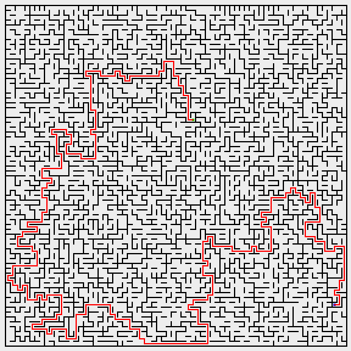

Jeff McGlynn
#72846979
Jesus Quezada
#50022121
Wilson’s algorithm is the first solver that we implemented. Although it runs very slowly, it manages to stay within the six second time limit for generating a 500 x 500 maze. The generator creates the mazes very uniformly, and typically does so in 2-4 seconds in our testing environment.
The algorithm works by choosing an arbitrary point in the maze and performing a “loop-erased random walk” until running into a node that has already been generated, or “connected” to the maze. Once the path is created it is retraced and each node in the path is marked as “connected.” If the path self-intersects only the last direction is retraced, allowing the generator to create a path without worrying about resolving intersections.
The algorithm is as follows:
Our implementation is designed to be memory-efficient. The random walks have no definite length and will continue until intersecting a connected node of the maze. To reduce memory usage a table is created to store the direction of movement at each node in the path, instead of keeping track of the entire path.
This is inspired by the table of last visited nodes created by Dijkstra's algorithm but is modified to only contain the information relevant to trace the path.
Example maze generated with Wilson’s algorithm at 70x70 size:
This algorithm was implemented to test different generation algorithms. It is significantly faster than the Wilson generator, creating a 500x500 maze in 0.5 seconds.
Eller’s algorithm generates mazes in linear time but does not generate as uniformly as Wilson’s algorithm. The maze tends to favor vertical movements and the right-most column and bottom row appear less random than other columns or rows.
The algorithm is as follows:
This algorithm is not used in our final generator and was implemented to be used for comparison with other algorithms. We ultimately did not choose this algorithm because of the tendency to move vertically and artifacts in the final row and column. We did not run into time constraints so the speed of the algorithm was not very important for our final decision.
Example maze generated with Eller’s algorithm at 70x70 size:
Final Generator, Wilson’s Algorithm with Post-Processing
Our goal for generating mazes is to make them difficult for the solver. Mazes that are easy for humans to solve are not necessarily easy for computers. To make the maze difficult to solve we had the following goals:
Our submission generates mazes in a two-pass process. First, a maze is generated with Wilson’s Algorithm and then the maze is post-processed to make it more difficult for a computer solver to find a solution. The post-processor picks the worst possible endpoint for the maze’s start point and begins removing walls between nearby paths on the maze.
Mazes are generated using a slightly modified version of the Wilson’s algorithm generator. A random start location is chosen and the rest of the maze is generated.
The complete maze is passed to the post-processing step which first chooses a good endpoint for the maze. To find the optimal endpoint a complete search of the maze is performed to find the furthest possible point from the start. To create this a table of “depth” values, or distance from the start, is created for each node in the maze. Choosing the longest distance has the greatest possibility of being a long and winding path, and thus harder for the Manhattan distance heuristic to solve.
We re-use the depth table in the second part of post-processing to determine which walls to remove. A scan is performed from the top left corner of the maze to the bottom right corner, and if the node to the left or to the top of the current node is less than seven moves away the wall is removed.
This removes a lot of extraneous walls in the maze without changing the path for the optimal solution. The lack of walls make it more likely the solver to traverse dead-ends by giving it more opportunities to do so.
Example maze generated with final algorithm at 70x70 size:

The first implementation of our solver was using a simple Breadth First Search. Breadth First Search was used primarily for its capability of finding the optimal solution every time despite being inefficient in the process. In the end, Breadth First Search was useful for gauging how well the other solvers are performing by giving us a benchmark for comparison.
Depth First Search was the next implementation which reduced memory usage and often found solutions in less time. Depth First Search gave us a quick and easy solver which we used to test out our early implementations of our generator. While Depth First Search performed better than Breadth First Search on average, it still tended to observe a significant amount of unnecessary nodes.
The natural progression of Depth First Search was Bidirectional Depth First Search. With Bidirectional Search we noticed a consistent increase in performance to Depth First Search. By maintaining two frontiers the chances of running into an existing path improved the average solution time. With this in mind, it was a clear indication that a Bidirectional Search would improve our solver.
The next bidirectional search we worked with was a simple A* search. The heuristic used in our bidirectional search was the use of Manhattan Distance from the start position towards the end position. The addition of this heuristic significantly increased the accuracy of our solver since it was much easier for both of our frontiers to find each other by going towards the same general direction.
Continuing to improve on our A* search, the next step was having the heuristic score the shortest distance from each node to the other’s frontier. By recalculating our heuristic every time the frontier changed we allowed each side of our search to adapt itself as the other side of the solver moved in its own manner. Having both of our frontiers actively seeking each other further improved the accuracy of our searches.
A problem that came up with this search, however, was the amount of computation required in order to recalculate the distance from all of the frontier nodes of one side with that of the opposite side. As mazes get bigger, the amount of computations required would lead to O() time complexity every time we expand the frontier. To remedy this we approximate the best score by only calculating the heuristic once, against the last position on the other frontier, for each node in the active frontier. This optimization reduced complexity down to O(
) time.
The final version of our bidirectional A* search was inspired by the following beliefs:
Having had a good deal of success with our recently created A* search, we felt it necessary to add more aid to our heuristic while not breaking what was already working. As a result, we continue to use Manhattan Distance as the primary source for our search while using the statistics to guide our decisions further.
After each maze has been solved, statistics are gathered based on what nodes were traversed to reach the answer. Every subsequent maze traversed then uses this data in order to make an informed decision about the types of paths the maze will tend to create. A weight is then associated with the statistics, so as to not rely too heavily on this uncertain data.
To determine the amount of weight that would be placed on the statistics, we ran many different tests using different types and sizes of mazes. We found that the more difficult mazes tended to cause problems with our statistics. The more we focused on our statistics, the more often we would end up hurting the heuristic for important nodes. As a result, the weight that tended to give the most favorable results on a variety of different maze types was 25%.
This is a graph using the standard Wilson’s algorithm generator:
This is a graph using our final generator:
Shown here are the statistics we obtained from running all of our solvers against our Final Wilson Generator:
Width: 500 Height: 500
Number of iterations: 100
Adaptive AStar Weight = 0.25
=========================== SCORES ==========================
BreadthFirst: 246557.27
DepthFirst: 130232.266
BidirectionalDepth: 96531.72
AStarSimple: 116034.75
AStar: 83457.625
AdaptiveAStar: 83955.75
=============================================================
Performance of Adaptive A* = 0.60% worse
Width: 500 Height: 500
Number of iterations: 100
Adaptive AStar Weight = 0.5
=========================== SCORES ==========================
BreadthFirst: 246397.92
DepthFirst: 131276.44
BidirectionalDepth: 86539.22
AStarSimple: 118396.33
AStar: 90284.59
AdaptiveAStar: 90461.22
=============================================================
Performance of Adaptive A* = 0.2% worse
Width: 500 Height: 500
Number of iterations: 100
Adaptive AStar Weight = 0.75
=========================== SCORES ==========================
BreadthFirst: 246411.06
DepthFirst: 129082.35
BidirectionalDepth: 90852.164
AStarSimple: 121328.086
AStar: 90211.88
AdaptiveAStar: 89287.8
=============================================================
Performance of Adaptive A* = 1.03% better
The increased weight resulted in better scores against our improved generator, but we decided against increasing the weight because we do not believe our competitor's generators will be as harsh as ours.
Peter worked with us at the beginning of the project but was unable to continue working on it until the end. No code written by Peter is included in the final product but his ideas may be included in the project.
"Dijkstra's algorithm." Wikipedia, The Free Encyclopedia. Wikipedia, The Free Encyclopedia, 23 Nov. 2010. Web. 29 Nov. 2010. <http://en.wikipedia.org/wiki/Dijkstra's_algorithm>.
"Loop-erased random walk." Wikipedia, The Free Encyclopedia. Wikipedia, The Free Encyclopedia, 9 Aug. 2010. Web. 29 Nov. 2010. <http://en.wikipedia.org/wiki/Loop-erased_random_walk>.
"Maze generation algorithm." Wikipedia, The Free Encyclopedia. Wikipedia, The Free Encyclopedia, 15 Nov. 2010. Web. 29 Nov. 2010. <http://en.wikipedia.org/wiki/Maze_generation_algorithm>.
Pullen, Walter D. "Maze Algorithms." Think Labyrinth. N.p., 02 Sep 2009. Web. 28 Nov 2010.
<http://www.astrolog.org/labyrnth/algrithm.htm>.
Russel, Stuart, and Peter Norvig. Artificial Intelligence: A Modern Approach. Third Edition. Pearson Education, Inc., 2010. 64-109. Print.